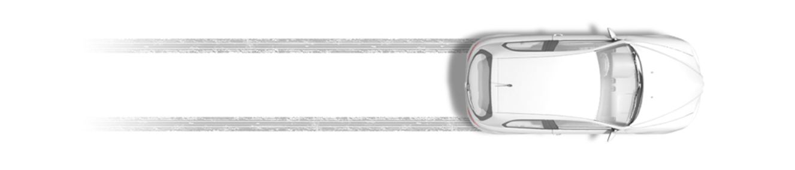

Kayaba Industry
Компания Kayaba Manufacturing Co., Ltd. основананая в 1935 году, начала свой путь в далеком 1919 году с маленькой исследовательской лаборатории, производителя продукции авиационногo и военного назначения и превратилась в корпорацию, которая на протяжении почти столетия специализируется на производстве различной гидравлической техники.
Продукты компании
СТОЙКИ СТАБИЛИЗАТОРА
Стойки стабилизатора – элементы системы стабилизации поперечной устойчивости автомобиля
РУЛЕВЫЕ ТЯГИ И НАКОНЕЧНИКИ
Важнейшие элементы системы рулевого управления легковых автомобилей
ШАРОВЫЕ ОПОРЫ
Шаровые опоры обеспечивают подвижное соединение элементов подвески современного автомобиля
СПОРТИВНЫЕ ПРУЖИНЫ
Высокотехнологичные спортивные пружины для койловеров.
О компании
Японская компания Kayaba (часто KYB) на данный момент считается одним из лучших во всем мире производителей амортизаторов. Производственные мощности сосредоточены в нескольких городах Японии, однако вся продукция быстро расходится по миру. В силу не самого большого количества заводов и неизменно высокого качества продукции, японские амортизаторы по цене практически не уступают оригинальным.
Контакты
г. Москва
Россия, 117638, Москва, Одесская ул., 2, корп. А, БЦ «Лотос».
Тел/факс: +7 (495) 771-60-10
info@kyb.ru
г. Владивосток
Россия, 690003, Владивосток ул. 1-я Морская, д. 9, офис 309
Тел/факс: +7 (423) 261-03-83
info@kyb.ru